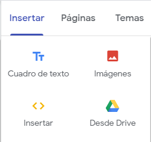

En la parte de la derecha tenemos varias herramientas para editar nuestra página web.
Insertar
|  |
Cuadro de texto: sirve para insertar un cuadro de texto que sirve para escribir en nuestra página web. Insertar: sirve para insertar cualquier página web mediante url o un código html. Imágenes: sirve para subir imágenes a la página web. Desde drive: sirve para poner alguna foto o vídeo que tengamos en nuestro drive. |
Hay diferentes diseños de página.
También hay diferentes tipos de elementos para poner
También podemos crear páginas con el símbolo mas que esta debajo, cuando le demos nos dirá el nombre que queremos dar a la página, cuando lo pongamos se añadirá debajo de la página inicial justo como sale en la foto anterior.
Se puede editar las páginas, es decir, que puedes mover el orden de las páginas como tu quieras.
Hay temas para nuestra página web quede mas bonita.